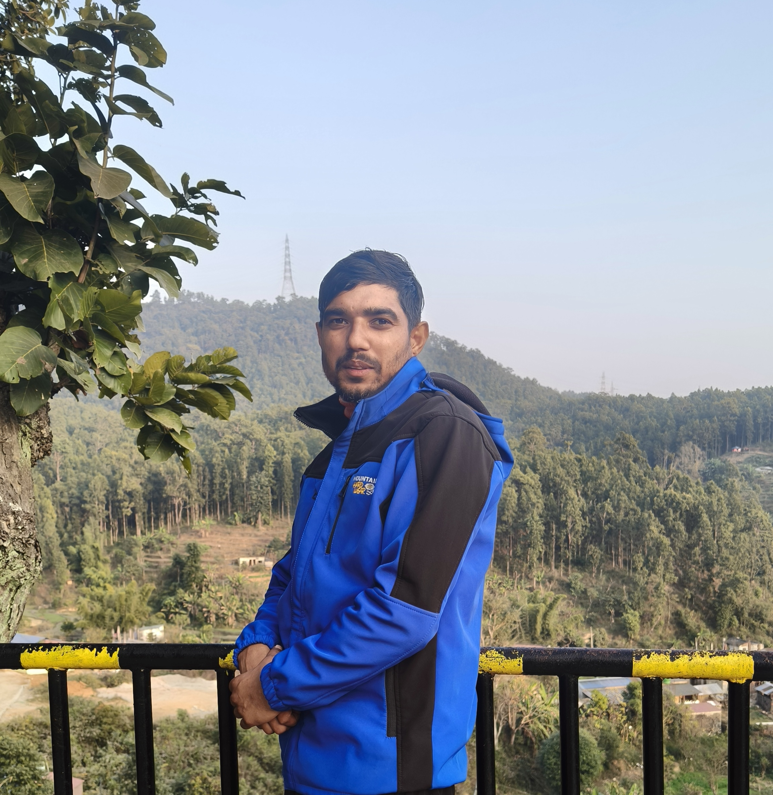
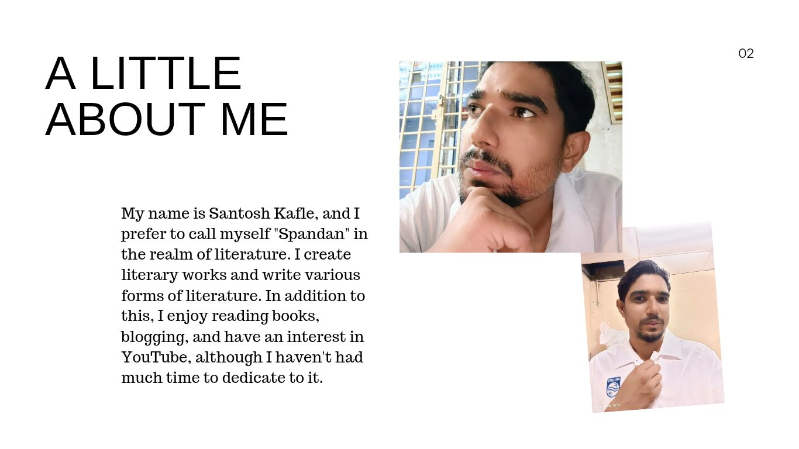
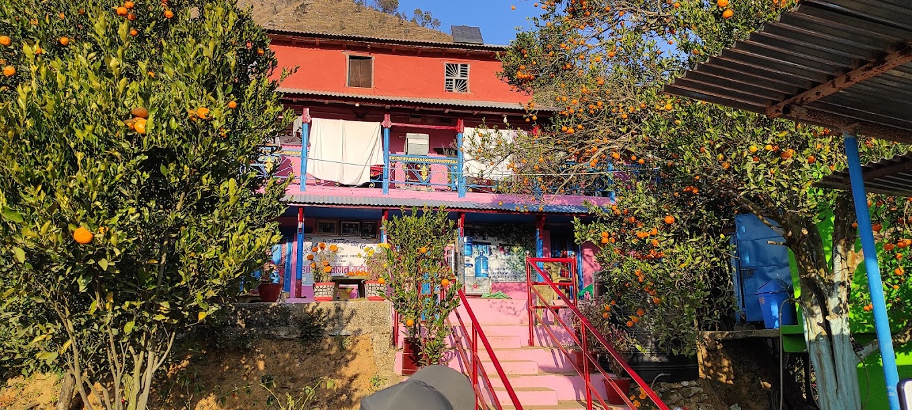
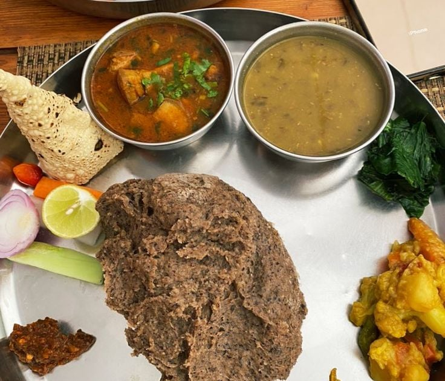
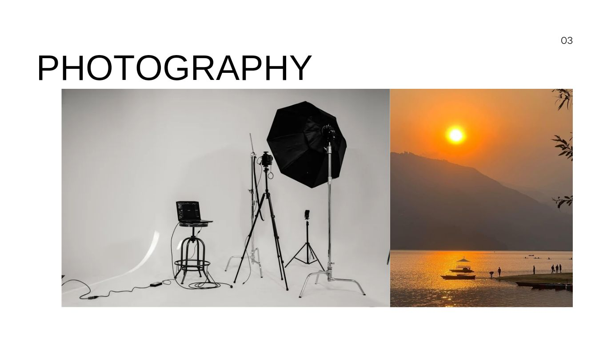

Tourism Journalist and Social Activist. My mission is to share the untold stories of rural villages and bring hidden beauties of Nepal to the global stage.


In the literary world, I am widely known as 'Spandan'. I am not just a traveler, but a collector of stories from the shadows of rural life. The core objective of my writing and journalism is to promote rural tourism and preserve authentic Nepalese culture.

Experience local hospitality and authentic rural lifestyle.

Taste the purity of village life with organic Dhindo, local chicken, and authentic flavors.

Witness breathtaking sunrises from the top of serene hills.
Iconic trekking & Adventure.
Watch our latest documentary here:
We have brought stories of hundreds of undiscovered villages to life through our videos.
Email: kaflesantosh9@gmail.com